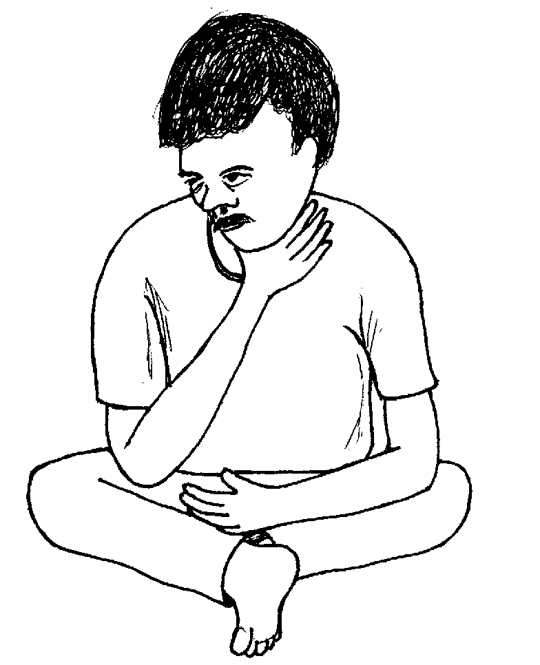
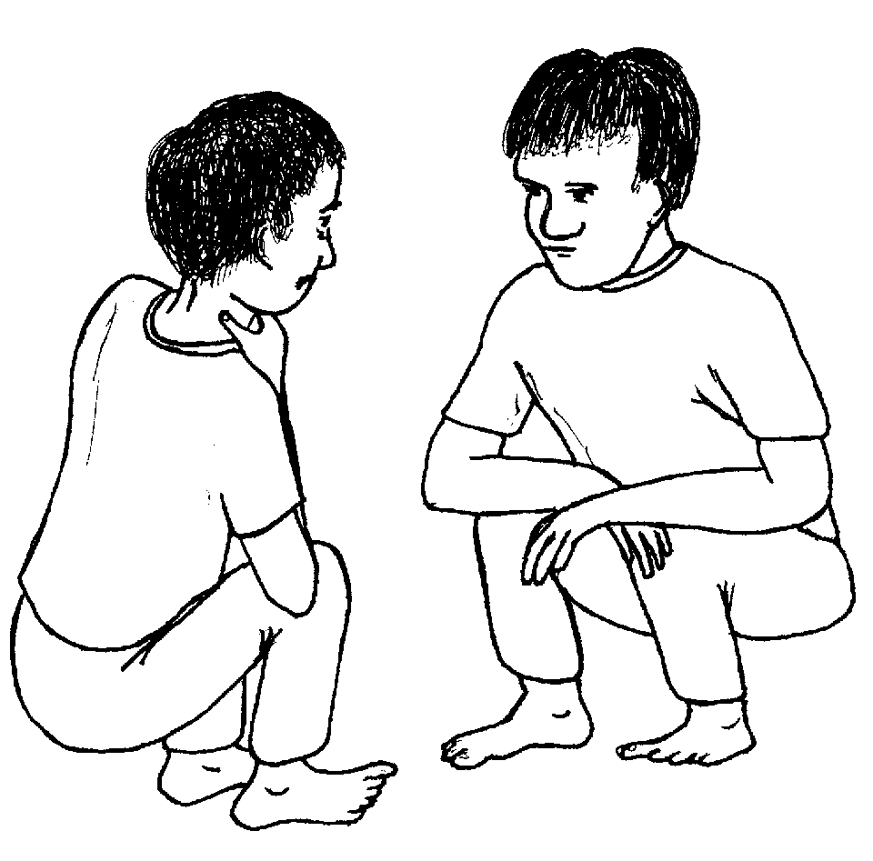
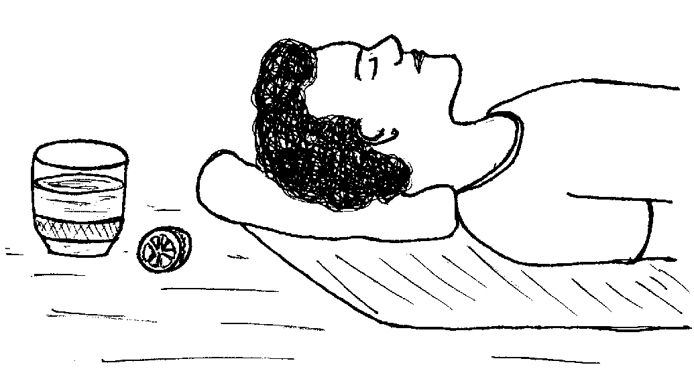
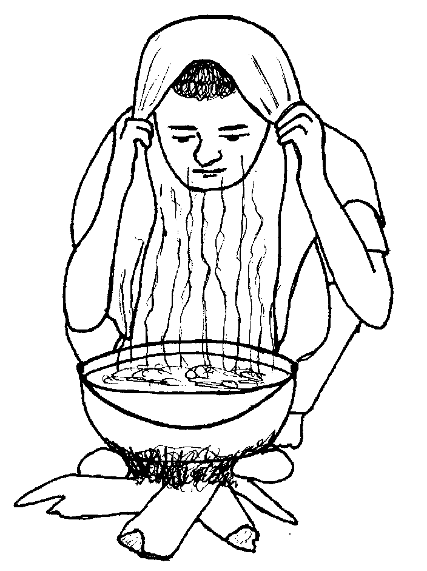
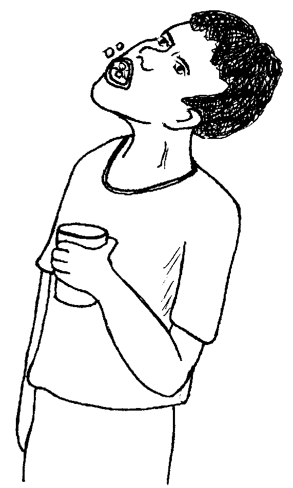
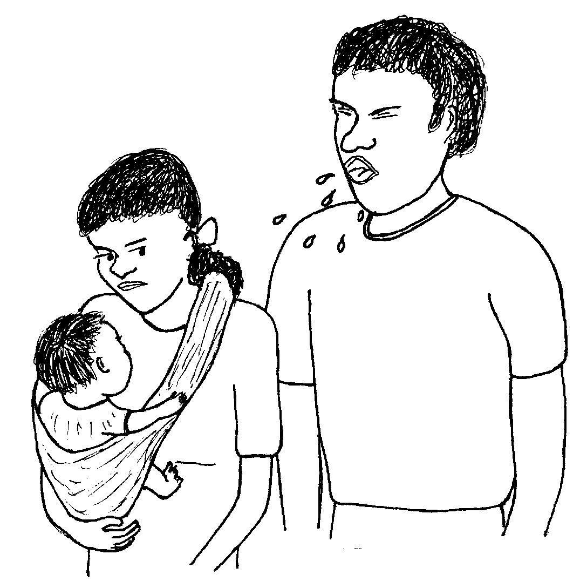
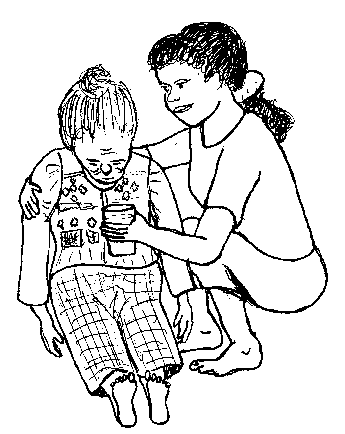
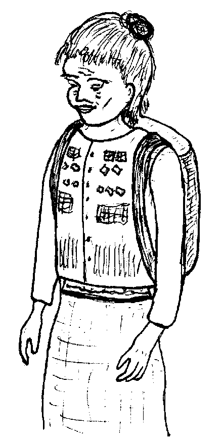

Matigsalug Manobo Healthbooks
Previous Healthbook Up to main Healthbooks page Next Healthbook
Vernacular Lexicon
A
B
BAP
BL
D
E
G
H
I
K
KI
L
LA
LIP
M
N
O
P
PA
R
S
SE
SIN
T
TE
TIN
U
V
W
Y
Z
Healthbooks
Dueg geramen ni Lukas ne bayew mareet. Egnguwehen wey egmasakit ka abelengan din wey due kelab keg pangelaak din.

Amana rin e nabeley wey egmemasakit pad man-e ka me tul-an din. Keneg pekeeleg sikandin neg enew te maselem neg tarabahu.
Te an-anayan, sikandin de ka egderalu te iling due, piru te ware naluhey, migderalu e degma ka langun ne pamilya rin.
Me tatelu e ne aldew si Lukas ka migderalu.
Nakasuman-suman ni Lukas neg inse te alukuy rin ne si Inuk, ne sabekan health worker, ke due bawi neg pakabawi te dalu rin.
Te pegginguma ni Lukas diyet baley ni Inuk, impangguhuran din e si Inuk meyitenged te dalu rin. Ne mig-inse sikandin, “Egkaayun ded neg kabehayan a nikeykew te pinisilin?”

Ne migkahi si Inuk, “Keneg pakabawi ka me pinisilin wey ka duma pad ne me antibayutik te dalu nu.”
Ne migpabulus si Inuk ka migkahi te, “Ka dalu nu diyeg puun te lain ne kalasi te kahew. Ne sika ne kahew, keneg kabawian te me antibayutik.”
Ne migkahi si Inuk te, “Nalayam e ka me kahew te me antibayutik tenged te layun eg-inum ka me etew te antibayutik keg deralu iling keykew.
“Ne kuntee kenad amana egpakabawi ka antibayutik te me masumpit e ne me dalu iling te pulmunya wey tibi.
“Wey egpakaamin de te seleppi ka egbeli te bawi ne igbawi keykew ne dalu.”
Ne migkahi si Inuk te, “Due degma duman me antibayutik neg pakapatey ke kene ta egkaay-ayaran teg gamit. Su ka keddin igkatambag, kene kew egbeli te antibayutik para te dalu niyu.
“Egkeulian ded sika ne dalu seled te sabekan simana minsan kene ki egbebawi.”
Ne migkahi si Lukas te, “Ew, uya. Nakasuman-suman ka ki Wini te mig-inum te pinisilin ne miglebag e ka abelengan din ne nataman, warad e nakaheheyinawa sikandin. Ne nataman, migpatey rin e.”
Ne migtabak si Inuk te, “Uya, nakasuman-suman e red. Sengekakuwa ne delikaddu ka bawi piru marelag de ne dueg patey puun due.”
Ne mig-inse si Lukas ne migkahi te, “Duen pad man-e duma ne eggimuwen ku?”
Ne migtabak si Inuk te, “Uya, keilangan ne himmeley kew wey inum kew te dakel ne weyig.

“Egkaayun neg pegsewuhen niyu ka weyig te limunsitu wey ke sitrus naa, teneb, wey meinit ne weyig, nataman eg-inumen.”
Ne migkahi man-e sikandin te, “Emun keg keibeg kew neg keen, keilangan neg keen kew te egpakabehey te keupiya te lawa niyu. Ispurtanti degma neg parahas egpasusu ka asawa nu te anak niyu.
“Egpakabulig amana sika te me lawa niyu wey mahaan kew re egmanekal.”
Ne mig-inse si Lukas te, “Nekey naan e mule ka nguweg ku wey buwe?”
Ne migkahi si Inuk te, “Kenen delikaddu ke egbuween ki su emun keg buween ki, egpakalihawang ka kahew ne mig-ugpe te kelab ta. Su sika ne kahew ka egpakapareralu kanta.
“Emun ke eglasi-lasi ka eg-inum te weyig wey keg guhuub, mahaan de egkaawe ka kelab nu. Egpakabawi degma sika teg pueten.”

Ne mig-inse si Lukas te, “Egmenuwen ku naa ka abelengan ku wey ka me masakit neg geramen ku?”

Ne migtabak si Inuk te, “Pangullimug ke re te bayew meinit ne weyig neg amutan te deisek ne asin. Keg kaayun, inum ka te inumen neg sewuhan te weyig te limunsitu, teneb, wey meinit ne weyig su eyew kenad amanan masakit ka abelengan nu.
“Egkaayun neg inum ka te aspirin wey ke parasitamul ke egmemasakit ka lawa nu, piru kene nu peinuma ka me bate te aspirin.”
Kahi ni Inuk te, “Seinin me paahi, egpakabulig eyew keneg pakahastu te seleppi ne igbeli te bawi.”
Ne mig-inse si Lukas te, “Mania te migpanderalu degma ka me pamilya ku te sabeka ku man de perem te miggeram?”
Ne migkahi si Inuk te, “Emun keg buween ka migderalu, egpakaalin diyet duma ka kahew. Neg kataman egpakaseled diyet duma ka kahew emun keg geheyinawa sikandan.

“Piru emun keg sagpengan nu ka be-be nu wey ka irung nu keg buween ka, kene ded egpakahalin ka kahew diyet duma.”
Ne migkahi si Inuk man-e te, “Keilangan neg keen kew te keenen neg pakabehey te kanekal te lawa niyu.”
Ne migpabulus sikandin ka migkahi te, “Piru kenen malehet kag kahiyen te duma ne iyan kun egpuunan te seinin dalu kag keuma te uran wey keg karampil te meinit.”
Migpasalamat si Lukas te alukuy rin wey intuman din ka langun ne tambag diyet kandin.
Te ware naluhey ne aldew, miglibed din e man-e diyet ki Inuk. Migpangguhuran din si Inuk te neulian e ka me pamilya rin gawas te iney rin su migmasumpit pad.
Puun dutu, migduma si Inuk diyet baley ni Lukas su impitew rin ka buyag ne iney ni Lukas.
Nakabantey si Inuk te migmeinit ka lawa te buyag ne malitan, su miglusungan e ka buyag. Makehal ka buwe din wey migmakalawag e ka kelab din wey egkeepuk din, wey egpakasengaseng.
Ne migkahi si Lukas diyet ki Inuk te, “Due pulmunya te iney nu. Keilangan neg uyanen nu sikandin diyet huspital su emun ke kene, egpatey sikandin.”
Ne migpabulus sikandin ka migkahi te, “Duen pad man-e dalu rin ne dangeb, subla ne delikaddu ne kahew ne migpuun te dalu nu nekani. Piru egpakabawi ka antibayutik te seinin dalu.”
Ne migkahi si Inuk te, “Egpeinumen kug dagdahawi ka iney nu te antibayutik kuntee su kema ke kenad egpekeuma sikandin diyet huspital ke keneg pekeinum.

“Piru keilangan ded ne eg-uyanen nu sikandin diyet huspital su eyew egpeinumen te duktur te bawi ne manedted neg pakabawi te dalu rin.”
Ne mig-inse si Lukas te, “Duen pad keilangan neg gimuwen ku?”
Ne migtabak si Inuk te, “Keilangan man-e neg peinumen nu sikandin te weyig su eyew keneg kaawaan te weyig ka lawa rin.”
Ne impeinum e ni Inuk ka buyag te bawi wey henduen pad ne in-uyan ni Lukas diyet huspital.
Kaskasaan ka keuyahan te buyag su migmahaanan dan ma pabawii. Impeinum sikandin te duktur te manedted ne bawi neg pekeyimatey te kahew te pulmunya.

Mania te kenen meupiya neg peinumen te antibayutik kag nguwehen wey egbuween?
Nekey-a ka risulta keg gamit ki te antibayutik te minsan nekey ne dalu?
Nekey-a ka eggimuwen ta ke due etew neg nguwehen wey egbuween?
Nekey-a kag gimuwen ta su eyew keneg halin seinin kahew diyet duma?
Nekey-a ka palinneu te pulmunya wey nekey-a kag gimuwen ta te seini ne etew?
This page last updated: 28-Dec-2019
Copyright © 2009-2010